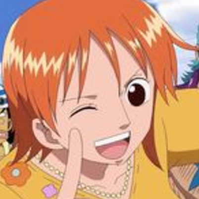

Ara
Born: Feburary 18 2004
Age: 16
Height: 6"1
Power: Teleportation (Activated by snapping fingers, cost of abit of blood, more she teleports or teleports with multiple people with cost more blood)
Myung-Hee Ara is a Korean-Born american. Ara was raised by her famous actor parents until the age of 13 when she was forced to move with her Uncle, She would usually try to stay out of the spotlight but her parents forced her to become an actor at the time. Which makes her famous. She would always sneak out at night to Ronnys place to hang out with him. she now currently lives under a cafeteria with Ronny, Jon and Edan.
Ara is based on
